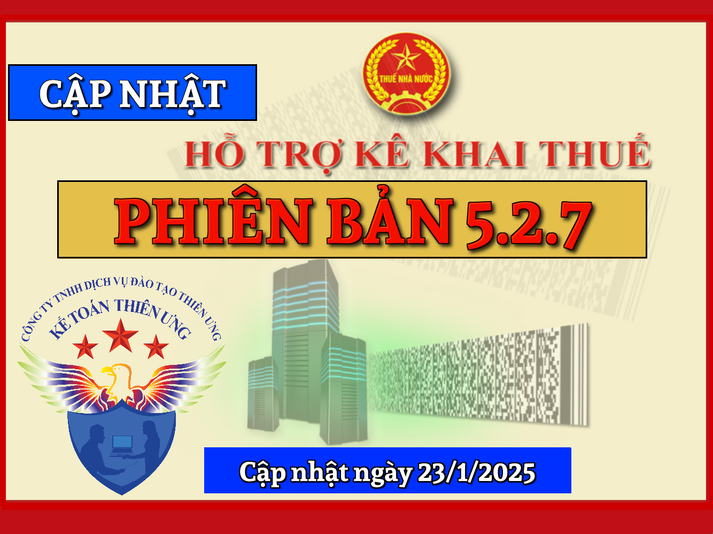
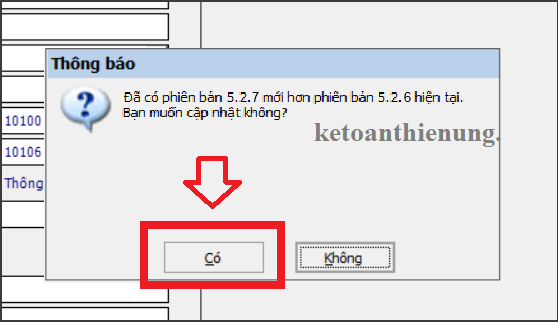
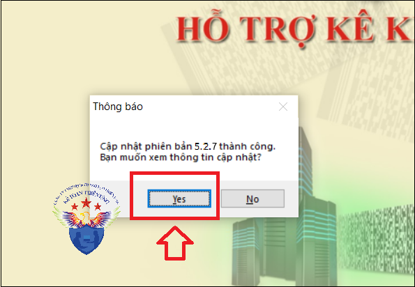

Phần mềm hỗ trợ kê khai thuế HTKK 5.2.7 mới nhất 2025 là Phần mềm HTKK mới nhất ngày 23/01/2025 của Tổng cục thuế. Download phần mềm HTKK 5.2.7 miễn phí tại đây.
Ngày 23/01/2025 Tổng cục Thuế thông báo về việc Nâng cấp ứng dụng Hỗ trợ kê khai (HTKK) 5.2.7
TỔNG CỤC THUẾ THÔNG BÁO
V/v Nâng cấp ứng dụng Hỗ trợ kê khai (HTKK) phiên bản 5.2.7 đáp ứng Nghị quyết 174/2024/QH15 về giảm thuế GTGT, đáp ứng Nghị quyết 60/2024/UBTVQH15 về mức thuế bảo vệ môi trường đối với xăng dầu, mỡ nhờn
Tổng cục Thuế thông báo nâng cấp ứng dụng Hỗ trợ kê khai (HTKK) phiên bản 5.2.7 đáp ứng Nghị quyết 174/2024/QH15 về giảm thuế GTGT, đáp ứng Nghị quyết 60/2024/UBTVQH15 về mức thuế bảo vệ môi trường đối với xăng dầu, mỡ nhờn đồng thời cập nhật một số nội dung phát sinh trong quá trình triển khai HTKK 5.2.6, cụ thể như sau:
I. Nâng cấp ứng dụng đáp ứng Nghị quyết số 174/2024/QH15 về giảm thuế GTGT
Nâng cấp chức năng kê khai đối với các tờ khai 01/GTGT (TT80/2021), 04/GTGT (TT80/2021), 01/CNKD (TT40/2021), 01/TTS (TT40/2021), cụ thể như sau:
- Sửa tên tên phụ lục PL 142/2024/QH15 khi chọn phụ lục đính kèm tờ khai thành PL 142/2024/QH15 - 174/2024/QH15
- Cập nhật hiệu lực cho phép đính kèm PL 142/2024/QH15 - 174/2024/QH15 như sau:
+ Đối với tờ khai 01/GTGT (TT80/2021): Cho phép đính kèm khi chọn ngành nghề “Hoạt động sản xuất kinh doanh thông thường”, “Hoạt động thăm dò, khai thác dầu khí”, “Nhà máy sản xuất điện khác địa bàn tỉnh nơi đóng trụ sở chính” đối với các kỳ thuế:
• Kỳ tháng: 07/2024 đến tháng 06/2025
• Kỳ quý: Từ quý 3/2024 đến quý 2/2025
+ Đối với tờ khai 04/GTGT (TT80/2021):
• Trường hợp không tích chọn thu hộ: Kỳ tháng là từ tháng 07/2024 đến tháng 06/2025; Kỳ quý là từ quý 3/2024 đến quý 2/2025; Kỳ lần phát sinh từ ngày 01/07/2024 đến ngày 30/06/2025
• Trường hợp tích chọn thu hộ: Kỳ tháng là từ tháng 07/2024 đến tháng 06/2025; Kỳ quý là từ quý 3/2024 đến quý 2/2025
+ Đối với tờ khai 01/CNKD (TT40/2021):
• Kỳ tháng: Từ tháng 07/2024 đến tháng 06/2025
• Kỳ quý: Từ quý 3/2024 đến quý 2/2025
• Kỳ theo lần phát sinh: Từ ngày 01/07/2024 đến ngày 30/06/2025
+ Đối với tờ khai 01/TTS (TT40/2021):
• Kỳ tháng: Từ tháng 07/2024 đến tháng 06/2025
• Kỳ quý: Từ quý 3/2024 đến quý 2/2025
• Kỳ theo lần thanh toán: “Từ kỳ thanh toán” đến “Đến kỳ thanh toán” có giao với khoảng thời gian từ 01/07/2024 đến 30/06/2025
Lưu ý: Đối với các tờ khai bổ sung của các tờ khai 01/GTGT (TT80/2021), 04/GTGT (TT80/2021), 01/CNKD (TT40/2021), 01/TTS (TT40/2021) có điều chỉnh dữ liệu trên PL 142/2024/QH15 đã kê khai trên ứng dụng từ phiên bản 5.2.6 trở về trước, khi sử dụng phiên bản 5.2.7 người nộp thuế nhấn nút <Tổng hợp KHBS> để hiển thị đúng tên Phụ lục điều chỉnh trên 01-1/KHBS theo tên mới là PL 142/2024/QH15 - 174/2024/QH15
II. Cập nhật danh mục Thuế bảo vệ môi trường đáp ứng Nghị quyết số 60/2024/UBTVQH15
Cập nhật mức thuế có hiệu lực từ ngày 01/01/2025 đến ngày 31/12/2025 đối với các hàng hóa sau:
- Thuế bảo vệ môi trường mặt hàng xăng (trừ etanol) bán ra trong nước (Mã 020201): 2.000 (đồng)
- Thuế bảo vệ môi trường mặt hàng dầu diezel bán ra trong nước (Mã 020202): 1.000 (đồng)
- Thuế bảo vệ môi trường mặt hàng dầu hỏa bán ra trong nước (Mã 020203): 600 (đồng)
- Thuế bảo vệ môi trường mặt hàng nhiên liệu bay bán ra trong nước (Mã 020205): 1.000 (đồng)
- Thuế bảo vệ môi trường mặt hàng xăng E5 RON92 (trừ etanol) bán ra trong nước (Mã 020206): 2.000 (đồng)
- Thuế bảo vệ môi trường mặt hàng dầu mazut bán ra trong nước (Mã 020207): 1.000 (đồng)
- Thuế bảo vệ môi trường mặt hàng dầu nhờn bán ra trong nước (Mã 020208): 1.000 (đồng)
- Thuế bảo vệ môi trường mặt hàng mỡ nhờn bán ra trong nước (Mã 020209): 1.000 (đồng)
Cập nhật mức thuế có hiệu lực từ ngày 01/01/2026 đối với các hàng hóa sau:
- Thuế bảo vệ môi trường mặt hàng xăng (trừ etanol) bán ra trong nước (Mã 020201): 4.000 (đồng)
- Thuế bảo vệ môi trường mặt hàng dầu diezel bán ra trong nước (Mã 020202): 2.000 (đồng)
- Thuế bảo vệ môi trường mặt hàng dầu hỏa bán ra trong nước (Mã 020203): 1.000 (đồng)
- Thuế bảo vệ môi trường mặt hàng nhiên liệu bay bán ra trong nước (Mã 020205): 3.000 (đồng)
- Thuế bảo vệ môi trường mặt hàng xăng E5 RON92 (trừ etanol) bán ra trong nước (Mã 020206): 4.000 (đồng)
- Thuế bảo vệ môi trường mặt hàng dầu mazut bán ra trong nước (Mã 020207): 2.000 (đồng)
- Thuế bảo vệ môi trường mặt hàng dầu nhờn bán ra trong nước (Mã 020208): 2.000 (đồng)
- Thuế bảo vệ môi trường mặt hàng mỡ nhờn bán ra trong nước (Mã 020209): 2.000 (đồng)
III. Cập nhật các nội dung phát sinh
1. Cập nhật địa bàn hành chính
- Cập nhật địa bàn hành chính trực thuộc tỉnh Thừa Thiên Huế đáp ứng Nghị quyết số 175/2024/QH15
- Cập nhật địa bàn hành chính trực thuộc tỉnh Bà Rịa – Vũng Tàu đáp ứng Nghị quyết số 1256/NQ-UBTVQH15
- Cập nhật địa bàn hành chính trực thuộc tỉnh Ninh Bình đáp ứng Nghị quyết số 1318/NQ-UBTVQH15
2. Cập nhật danh mục Cơ quan thuế
- Cập nhật Cơ quan thuế trực thuộc Cục Thuế tỉnh Bắc Giang đáp ứng Quyết định số 2614/QĐ-BTC ngày 04/11/2024 của Bộ Tài chính
- Cập nhật Cơ quan thuế trực thuộc Cục Thuế tỉnh Thanh Hóa đáp ứng Quyết định số 1970/QĐ-BTC ngày 17/12/2024 của Bộ Tài chính
- Cập nhật Cơ quan thuế trực thuộc Cục Thuế Thành phố Huế đáp ứng Quyết định số 3145/QĐ-BTC ngày 27/12/2024 của Bộ Tài chính
- Cập nhật Cơ quan thuế trực thuộc Cục Thuế tỉnh Ninh Bình đáp ứng Quyết định số 23/QĐ-BTC ngày 06/01/2025 của Bộ Tài chính
- Cập nhật Cơ quan thuế trực thuộc Cục Thuế tỉnh Bà Rịa - Vũng Tàu đáp ứng Quyết định số 24/QĐ-BTC ngày 06/01/2025 của Bộ Tài chính
3. Tờ khai thuế thu nhập cá nhân – mẫu 02/KK-TNCN (TT80/2021)
- Cập nhật làm tròn đúng chỉ tiêu [29] Tổng số thuế thu nhập cá nhân phát sinh trong kỳ
---------------------------------------------------------------------
Bắt đầu từ ngày 23/1/2025, khi lập hồ sơ khai thuế có liên quan đến nội dung nâng cấp nêu trên, tổ chức, cá nhân nộp thuế sẽ sử dụng các chức năng kê khai tại ứng dụng HTKK 5.2.7 thay cho các phiên bản trước đây.

----------------------------------------------------------------------------
Download Phần mềm HTKK 5.2.7 tại đây:

Để cài đặt được HTKK 5.2.7, máy tính của NNT cần đáp ứng thông số sau:
- Hệ điều hành WinXP (SP2, SP3), Win 7 trở lên…
(không hỗ trợ hệ điều hành iOS, Mac).
- Máy tính có cài .NET Framework 3.5 trở lên
- Nếu máy tính sử dụng hệ điều hành Win 7 trở lên không phải cài đặt .NET Framework 3.5 mà chỉ cần kích hoạt .NET Framework 3.5 đã tích hợp sẵn theo tài liệu hướng dẫn cài đặt tại đây
-----------------------------------------------------------------------------------------------
- Nếu không tải về được các bạn liên hệ trực tiếp với cơ quan thuế địa phương để được cung cấp và hỗ trợ trong quá trình cài đặt, sử dụng.
- Mọi phản ánh, góp ý của tổ chức, cá nhân nộp thuế được gửi đến cơ quan Thuế theo các số điện thoại, hộp thư điện tử hỗ trợ NNT về ứng dụng HTKK do cơ quan Thuế cung cấp.
Trường hợp: Máy tính các bạn đã cài phần mềm HTKK các phiên bản thấp hơn trước đó (ví dụ như phiên bản HTKK 5.2.6 chẳng hạn)
=> Các bạn chỉ cần Bật phần mềm HTKK phiên bản cũ đó lên => Phần mềm sẽ hiển thị Thông báo cập nhật lên Phần mềm HTKK 5.2.7 => Các bạn bấm nút "Có".
=> Các bạn chỉ cần Bật phần mềm HTKK phiên bản cũ đó lên => Phần mềm sẽ hiển thị Thông báo cập nhật lên Phần mềm HTKK 5.2.7 => Các bạn bấm nút "Có".

=> Tiếp đó đợi phần mềm chạy cập nhật là xong nhé:

Như vậy là các bạn đã nâng cấp xong Phần mềm HTKK 5.2.7 nhé.
------------------------------------------------------------------------
KẾ TOÁN DIỆU TÂM
Chúc các bạn cài đặt và nâng cấp phần mềm HTKK mới nhất thành công!
KẾ TOÁN DIỆU TÂM
Chúc các bạn cài đặt và nâng cấp phần mềm HTKK mới nhất thành công!